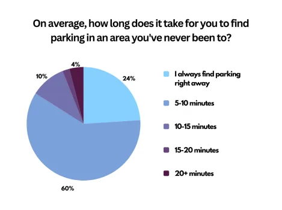
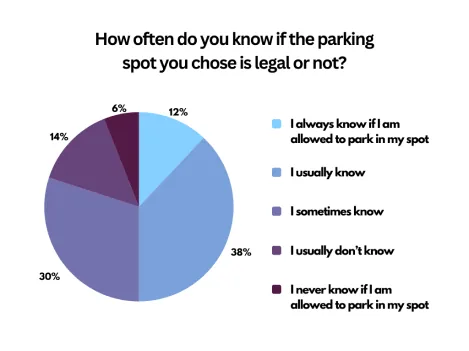
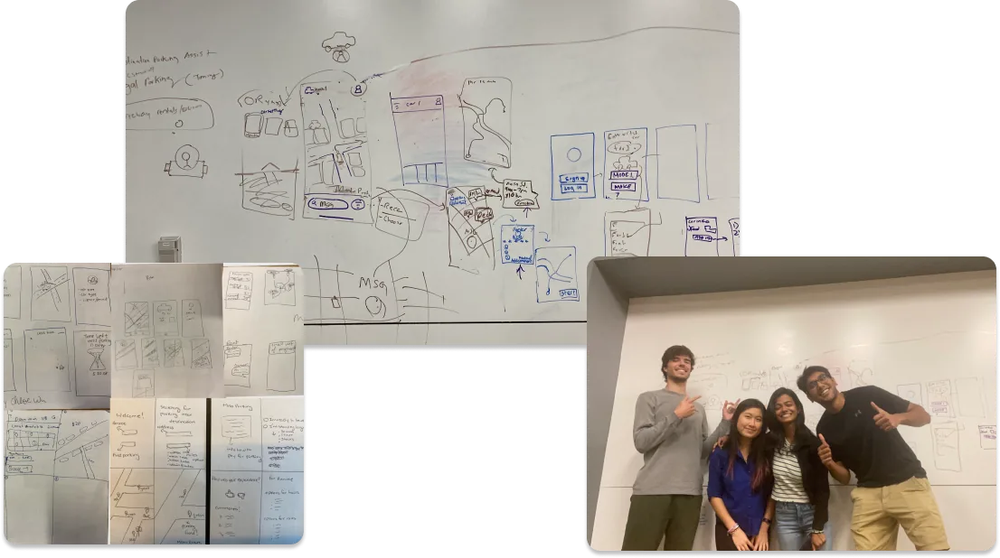
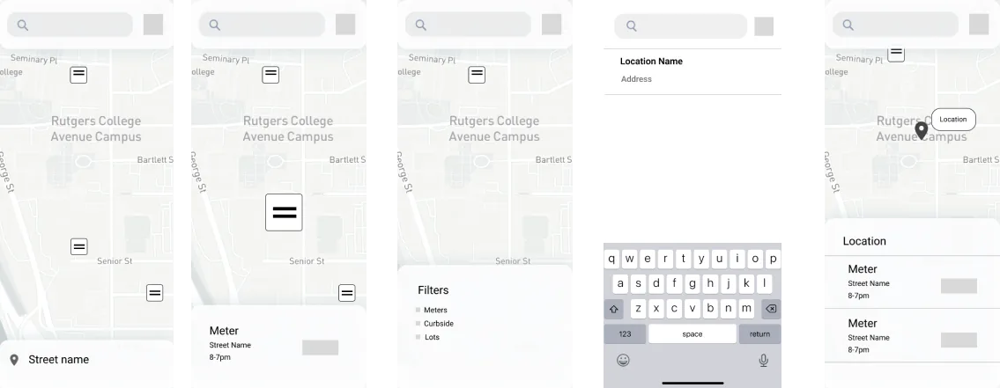
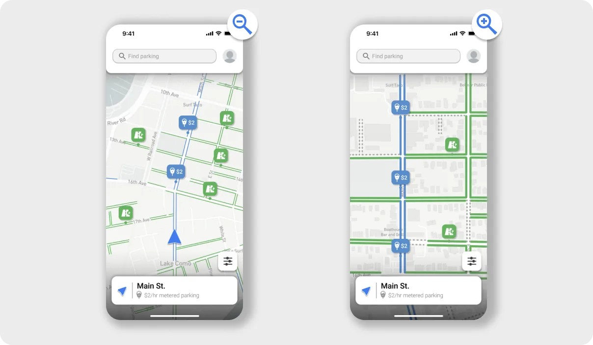
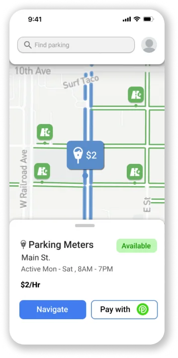
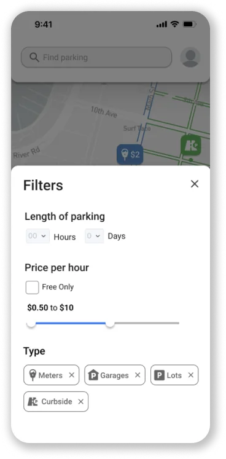
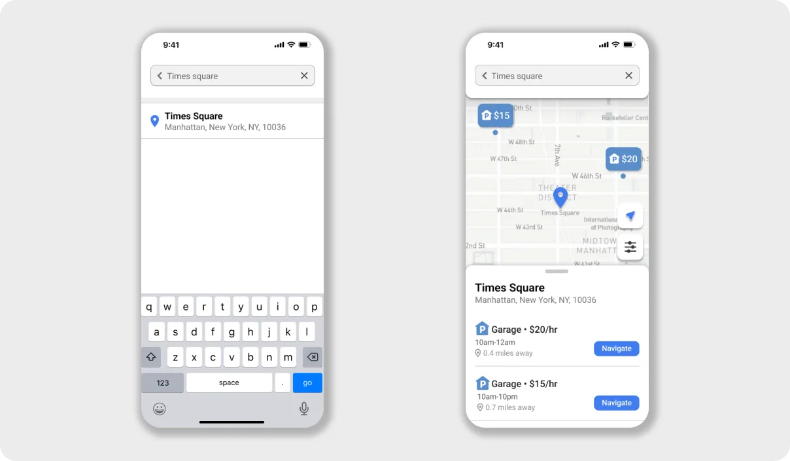

<!--
  Spot / UX Case Study Page
  Rebuilt from ryanlayton.com/spot.html into the "Architectural Narrative" portfolio system.
  Warm portfolio theme throughout (Selected UX Work project). Real images pulled from ryanlayton.com.
  Same Client-First-style class names as the other case studies / reuse the same Webflow classes.
-->
<meta charset="utf-8"/>
<meta content="width=device-width, initial-scale=1" name="viewport"/>
<title>Spot / Case Study</title>
<link href="https://fonts.googleapis.com" rel="preconnect"/>
<link crossorigin="" href="https://fonts.gstatic.com" rel="preconnect"/>
<link href="https://fonts.googleapis.com/css2?family=Playfair+Display:wght@500;600;700&amp;family=Inter:wght@400;600;800&amp;display=swap" rel="stylesheet"/>
<style>
  :root {
    --canvas: #F5F2EE;
    --ink: #141414;
    --slate: #5D737E;
    --olive: #707A5E;
    --warm-gray: #8D8D8D;
    --link-hover: #51656F;   /* slate, darkened to clear AA on canvas and field */
    --obsidian: #1A1A1A;
    --field: #EBE8E4;
    --hairline: #D8D3CB;
    --muted: #4C4A47;

    --container-max: 1200px;
    --gutter: 32px;
    --section-pad: 80px;
    --stack-sm: 8px;
    --stack-md: 16px;
    --stack-lg: 48px;
  }

  * { box-sizing: border-box; }
  /* The nav is fixed at 68px, and nothing offset the anchor targets, so every in-page jump
     (#work, #about, #contact, and the case-study nav links back to index.html#work) landed
     the target flush at the viewport top, underneath the nav. scroll-padding-top on the
     scroll container fixes all of them at once; per-element scroll-margin would need adding
     to every new anchor. 88px is the nav plus 20px of air. */
  html { scroll-behavior: smooth; scroll-padding-top: 88px; }
  body { margin: 0; background: var(--canvas); color: var(--ink); font-family: "Inter", sans-serif; -webkit-font-smoothing: antialiased; font-size: 16px; line-height: 26px; }
  img { display: block; max-width: 100%; }

  .padding-global { padding-left: var(--gutter); padding-right: var(--gutter); }
  .container-large { max-width: var(--container-max); margin: 0 auto; width: 100%; }

  .section { padding-top: var(--section-pad); padding-bottom: var(--section-pad); }
  .section--flush-top { padding-top: 0; }

  .display-name { font-family: "Inter", sans-serif; font-weight: 800; font-size: 80px; line-height: 0.98; letter-spacing: -0.02em; text-transform: uppercase; margin: 0; }
  .statement { font-family: "Playfair Display", serif; font-weight: 600; font-size: 44px; line-height: 52px; margin: 0; }
  /* HEADLINES ARE SANS. Playfair stays for the display and editorial moments — the 44px hero
     statement, pull quotes, stat numbers — but not for headlines, which are full sentences a
     reader actually reads. Ryan: "it's just hard to read actual content with this font".
     The tell was that .headline-lg is stepped DOWN to 36px inside a two-column row, i.e.
     Playfair used below the size a Didone wants, for layout reasons. Inter 600 with -0.02em
     tracking reads instantly and sits in a clear hierarchy under the Playfair statement. */
  .headline-lg { font-family: "Inter", sans-serif; font-weight: 600; font-size: 44px; line-height: 54px; letter-spacing: -0.02em; margin: 0; }
  .headline-md { font-family: "Inter", sans-serif; font-weight: 600; font-size: 30px; line-height: 40px; letter-spacing: -0.02em; margin: 0; }
  .body-lg { font-size: 20px; line-height: 32px; }
  .body-md { font-size: 16px; line-height: 26px; }
  .ui-label { font-size: 12px; line-height: 16px; font-weight: 600; letter-spacing: 0.1em; text-transform: uppercase; }
  .caption { font-size: 14px; line-height: 20px; color: var(--warm-gray); }
  /* FULL WIDTH, STACKED. These blocks were capped narrow (headings 24-26ch, prose 62ch) inside a
     1200px container, which left roughly half of every text section empty. Ryan asked for them
     stacked and spanning the full width, so the caps are gone. Hero statements keep their caps on
     purpose, since a deliberately short hero line is a different thing. */
  /* ONE reading measure on the page. The split body column lands near 763px, so standalone
     prose gets the same 78ch and every paragraph reads at one width whether it sits in a split
     or at the container's left edge. Full width was 123 characters per line. */
  .measure { max-width: 78ch; }
  /* the hero deck sits at a larger size, so 78ch there is 868px and about 89 characters. */
  .hero-sub.measure { max-width: 62ch; }
  .mt-lg { margin-top: var(--stack-lg); }
  strong { font-weight: 600; }

  .dot { width: 8px; height: 8px; border-radius: 50%; display: inline-block; flex: 0 0 8px; background: var(--slate); }

  /* Hero */
  .hero { position: relative; padding-top: calc(var(--section-pad) + 68px); padding-bottom: var(--section-pad); overflow: hidden; }
  .hero-topo { position: absolute; top: -30px; right: -40px; width: 640px; max-width: 66%; opacity: 0.06; pointer-events: none; }
  .hero-eyebrow { display: flex; align-items: center; gap: var(--stack-md); color: var(--ink); margin-bottom: var(--stack-lg); }
  .hero-statement { margin-top: var(--stack-lg); max-width: 22ch; }

  /* Context strip */
  .context { display: flex; flex-wrap: wrap; border-bottom: 1px solid var(--hairline); }
  .context-item { flex: 1 1 200px; padding: 24px var(--gutter) 24px 0; }
  .context-item + .context-item { padding-left: var(--gutter); }
  .context-item .ui-label { color: var(--warm-gray); display: block; margin-bottom: var(--stack-sm); }
  /* Context-strip VALUES are data, not display: "UX Manager, full brand ownership",
     "~12 months", "Brand \u00b7 Web \u00b7 SEO". They were Playfair at 20px, which is the same
     Didone-too-small problem as the old figure titles and headlines, and it sat directly
     under the hero. Inter 500 at 19px. Playfair is reserved for the display and editorial
     moments now: the 44px statement, pull quotes, stat numbers, card titles, the footer. */
  .context-item .val { font-family: "Inter", sans-serif; font-weight: 500; font-size: 19px; line-height: 27px; letter-spacing: -0.01em; }

  /* Media frames */
  .frame { background: var(--field); border: 1px solid var(--hairline); padding: 24px; display: flex; align-items: center; justify-content: center; }
  .frame img { width: 100%; height: auto; }
  .frame-caption { color: var(--warm-gray); margin-top: var(--stack-md); }
  /* Prose that belongs to the image above it rather than to a heading. Shares the image's and
     caption's left edge so the group reads as one unit.
     .measure (78ch) is tuned for the 8fr body COLUMN; at full container width the same 78ch
     runs 1014px and about 95 characters a line. 59ch lands it on 763px — the exact width the
     body column resolves to — so this paragraph reads at the same measure as every other
     paragraph on the page. */
  .image-note { margin: var(--stack-lg) 0 0; max-width: 59ch; }
  .frame--bare { padding: 0; border: none; background: transparent; }

  /* Narrative sections */
  .sec-eyebrow { display: flex; align-items: center; gap: var(--stack-md); color: var(--ink); margin-bottom: var(--stack-md); }
  .sec-head { margin-bottom: var(--stack-lg); }

  /* SPLIT ROWS: the label side on the left, its content on the right, repeated down a section.
     Ryan's request: "what is juiced on the left, body on the right, then my role on the left,
     that body on the right". It ONLY works as a STACK. One two-column row sitting among
     full-width blocks reads as a broken layout, which is why a one-off attempt at this was
     reverted earlier. Every label-and-content pair becomes a row, so the left column reads as a
     deliberate label column.
     It also fixes the reading measure for free: the right column lands near 760px, about 78
     characters, where full-width prose was running about 123.
     BUILT WITH AN HTML PARSER, NOT REGEX. A regex pass at this silently swallowed closing tags
     and detached three paragraphs from .container-large entirely. If this ever needs redoing,
     use a parser. */
  .split { display: grid; grid-template-columns: 4fr 8fr; gap: var(--stack-lg) 56px;
    align-items: start; }
  /* MORE VERTICAL AIR. Ryan: "still feels disorganized here. maybe vertically space everything
     more". Rows were 36px apart, which is close enough to the gap inside a row that the section
     read as one dense block. 64px between rows, and the component bands get 80px so they read as
     their own beat rather than as another row. */
  .split + .split { margin-top: 64px; }
  .split--body { margin-top: 64px; }
  /* A continuation block hugs the row it continues, so it reads as the same thought rather than
     as a new row with a missing label. */
  .split > :first-child { margin-bottom: 0; }
  /* A big display line in a ~383px column wraps to four cramped lines, so headings step down
     inside a split. Same move the two brand pages make in .intro-cols. */
  .split .headline-lg { font-size: 32px; line-height: 42px; }
  .split .headline-md { font-size: 26px; line-height: 34px; }
  .split .sec-eyebrow { margin-bottom: var(--stack-sm); }
  .split .prose p + p { margin-top: var(--stack-md); }
  /* A continuation block with no label of its own still lines up with the text column, so every
     paragraph on the page shares one left edge. */
  @media (max-width: 900px) { .split { grid-template-columns: 1fr; gap: var(--stack-md); }
}
  .sec + .sec { border-top: 1px solid var(--hairline); }
  /* ALTERNATING SECTION BANDS, matching the two brand pages. Narrative sections alternate
     canvas / field so a long scroll reads as chapters instead of one undifferentiated column.
     The colour change IS the divider, so the .sec + .sec hairline is suppressed at every
     boundary touching a tinted section — a rule AND a tone change at the same edge reads as
     an accident. With strict alternation that removes all of them between .sec blocks.
     Plain .frame boxes are var(--field) too, so on a tinted band they would vanish into the
     background and leave their 24px padding reading as a random gap. They flip to canvas
     there, which makes the frame a lighter surface raised off the band. .frame--bare is
     excluded because it is deliberately transparent. */
  .sec--tint { background: var(--field); }
  .sec--tint + .sec, .sec + .sec--tint { border-top: none; }
  .sec--tint .frame:not(.frame--bare) { background: var(--canvas); }
  .subhead { margin-top: var(--stack-lg); margin-bottom: var(--stack-md); }
  .split .subhead { margin-top: 0; }
  .prose p { color: var(--ink); }
  .prose p + p { margin-top: var(--stack-md); }
  .prose ul { margin: var(--stack-md) 0 0; padding-left: 22px; }
  .prose li { margin-top: var(--stack-sm); }

  /* Stat row */
  /* No rules, no dividers, no boxes. Ryan: "you can remove all these lines and boxes". These
     were decorative ink rules framing a stat band and the how-might-we block, plus vertical
     hairlines between stats. Spacing carries the separation instead. The subtler structural
     hairlines between sections (.sec + .sec) and between .insight rows are a different device
     and are left in place. */
  /* The stats sit in the BODY COLUMN with the rest of the prose, not across the full page.
     Two up rather than three, so two on the top row and one on the bottom, which is what Ryan
     asked for and what a 763px column takes without cramping a 48px Playfair number.
     Margin is 0 because the .split--body wrapper already carries the 64px row spacing. */
  .stats { display: grid; grid-template-columns: repeat(2, 1fr); gap: 40px var(--gutter); margin: 0; }
  .stat { padding: 0; }
  .stat .num { font-family: "Playfair Display", serif; font-weight: 600; font-size: 48px; line-height: 56px; }
  .stat .desc { color: var(--muted); margin-top: var(--stack-sm); }

  /* How-might-we highlight */
  /* Full container width, and "How might we" is folded into the sentence rather than sitting
     above it as a small-caps label. Ryan asked for both. This is the one block on the page that
     is deliberately NOT a two-column row: it is a single display line and it should command the
     whole measure. */
  .hmw { margin-top: 80px; }
  .hmw .statement { max-width: none; }
  .hmw .statement { max-width: none; }
  /* ONE LABEL SYSTEM. Ryan: "they should all have the exact same style." The 12px uppercase
     label had drifted to five treatments across the site — ink, warm-gray, slate and olive —
     with no rule behind which was which, so the colour read as decoration. Two roles only:
     a label that NAMES the thing directly below it is var(--ink); a label that is quiet
     metadata bolted to an image or a data strip (.context-item, .shot, .state-item) is
     var(--warm-gray). No third colour. */
  .hmw .ui-label { color: var(--ink); display: block; margin-bottom: var(--stack-md); }

  /* Research findings */
  /* margin-bottom was 0, so the chart captions ran straight into the heading of the next
     block with no gap at all. 64px is this page's standard between-block rhythm — the same
     value .split + .split and .split--body use. */
  .findings { display: grid; grid-template-columns: repeat(3, 1fr); gap: var(--gutter);
    margin-top: var(--stack-lg); margin-bottom: 64px; }
  /* No padded box around a chart. The .frame chrome put a bordered grey card around an image
     that already has its own white plate and edge, so it read as a border inside a border. */
  .finding .frame { aspect-ratio: 4 / 3; padding: 0; border: none; background: transparent; }
  .finding .frame img { width: 100%; height: 100%; object-fit: contain; }
  .finding .desc { margin-top: var(--stack-md); color: var(--muted); }
  .finding .desc strong { color: var(--ink); }

  /* Insight-to-feature pairs */
  /* No border-top. With a header row the table already announces itself, so the rule above it
     was a fifth horizontal line in a block that only needed four. */
  .insights { margin: 80px 0; }
  /* Same 4fr / 8fr as .split, so every two-column row on the page shares one grid. These were
     1fr 1fr, which put the right column in a different place from the row directly above it. */
  /* The insight list is CONTENT UNDER the heading above it, so the group is set off with more
     air than sits between its own rows. Rows were 48px top and bottom, which spaced them as far
     apart as the heading was from the group, and that is what flattened the hierarchy. */
  /* The row separators STAY. Ryan: "some lines here are ok". These were removed with the stats
     framing, which was the wrong call: the stats rules were decorative, but these divide a list
     into its items and do real work. The list also keeps its top cap so it reads as one list. */
  .insight { display: grid; grid-template-columns: 4fr 8fr; gap: var(--stack-md) 56px; padding: 28px 0; border-bottom: 1px solid var(--hairline); }
  /* These are three full research findings — content the reader has to actually read, not a
     display moment. Playfair at 21px was the smallest body-weight serif on the site. Inter 600
     matches the headline voice used everywhere else and still outweighs the .answer column. */
  .insight .pain { font-family: "Inter", sans-serif; font-weight: 600; font-size: 21px; line-height: 30px; letter-spacing: -0.01em; }
  .insight .answer { color: var(--muted); align-self: start; }
  /* Column header for the insight table. Same 4fr/8fr tracks as .insight so the two labels sit
     exactly over the columns they name. Replaces the per-row .answer .ui-label. */
  .insights-head { display: grid; grid-template-columns: 4fr 8fr; gap: var(--stack-md) 56px;
    padding: var(--stack-md) 0; border-bottom: 1px solid var(--hairline); color: var(--ink); }

  /* Feature walkthrough */

  /* Phone mockups are portrait, and several are SMALL natively (showcase2 is 358px wide,
     gighubmock1 is 471px). Letting them fill a half-width column both oversized them and
     upscaled them past their own resolution, so they read blurry as well as huge.
     Capping HEIGHT handles portrait and landscape with one rule: a tall phone shrinks to fit,
     a wide screenshot is still bounded by max-width. width:auto is what guarantees nothing is
     ever scaled UP beyond its intrinsic size. The .frame is already a centering flex box, so
     a narrower image sits centred in its column with no extra rule. */
  .feature-media img { width: auto; max-width: 100%; max-height: 640px; }
  .feature { display: grid; grid-template-columns: 1fr 1fr; gap: var(--stack-lg) 64px; align-items: center; }
  .feature + .feature { margin-top: var(--section-pad); }
  .feature-lead { margin-top: var(--section-pad); }
  .feature--flip .feature-media { order: 2; }
  .feature-title { margin-bottom: var(--stack-md); }
  .feature-text .body-lg { color: var(--muted); }

  /* Takeaways */
  .takeaways { display: grid; grid-template-columns: 1fr 1fr; gap: var(--stack-lg) 64px; margin-top: var(--stack-lg); }
  .takeaway .headline-md { margin-bottom: var(--stack-md); }
  .takeaway p { color: var(--muted); }

  /* Close */
  .close-actions { display: flex; gap: var(--stack-md); flex-wrap: wrap; }
  .btn { display: inline-flex; align-items: center; padding: 14px 32px; text-decoration: none; border: 1px solid transparent; }
  .btn-ghost { border-color: var(--ink); color: var(--ink); }
  .btn-ghost:hover { background: var(--ink); color: var(--canvas); }

  a { color: var(--slate); }
  a:focus-visible, .btn:focus-visible { outline: 2px solid var(--ink); outline-offset: 3px; }
  @media (prefers-reduced-motion: reduce) { html { scroll-behavior: auto; } }

  @media (max-width: 900px) {
    .stats { grid-template-columns: 1fr; }
    .findings { grid-template-columns: 1fr; }
  }
  @media (max-width: 800px) {
    .feature, .insight, .takeaways { grid-template-columns: 1fr; }
    /* Once the rows stack, a two-column header has nothing to head — "Solution" would float
       above a single stacked column. Hide it and give each answer its own label back,
       generated rather than duplicated in the markup, so the wide layout keeps its one header
       and the narrow layout still says which half of the row it is reading. */
    .insights-head { display: none; }
    .insight .answer::before { content: "Solution"; display: block;
      font-size: 12px; line-height: 16px; font-weight: 600; letter-spacing: 0.1em;
      text-transform: uppercase; color: var(--ink); margin-bottom: var(--stack-sm); }
    .feature--flip .feature-media { order: 0; }
    .feature-media { margin-bottom: var(--stack-md); }
  }
  @media (max-width: 640px) {
    :root { --gutter: 24px; --section-pad: 40px; }
    .display-name { font-size: 44px; }
    .statement { font-size: 28px; line-height: 34px; }
    .headline-lg { font-size: 30px; line-height: 38px; }
    .headline-md { font-size: 25px; line-height: 33px; }
    .body-lg { font-size: 18px; line-height: 29px; }
    .stat .num { font-size: 36px; line-height: 42px; }
    .insight .pain { font-size: 22px; line-height: 30px; }
    .context-item + .context-item { padding-left: 0; }
  }
  /* NAV */
  .nav { position: fixed; top: 0; left: 0; right: 0; z-index: 50; background: transparent; transition: background .3s ease, border-color .3s ease; border-bottom: 1px solid transparent; }
  .nav.is-scrolled { background: rgba(245,242,238,0.95); border-bottom: 1px solid var(--hairline); }
  .nav-inner { display: flex; align-items: center; justify-content: space-between; height: 68px; }
  .nav-name { font-weight: 600; font-size: 15px; letter-spacing: 0.02em; text-decoration: none; color: var(--ink); }
  .nav-links { display: flex; gap: 32px; }
  /* Nav hover is a COLOUR SHIFT, not a growing underline. --link-hover is the site's slate
     darkened from #5D737E: slate itself measures 4.46:1 on the canvas and 4.08:1 on the tinted
     hero, both under the 4.5:1 AA floor for 16px text. #51656F is the same hue and clears it on
     both (5.47:1 and 5.00:1). Focus is still handled by the global a:focus-visible outline, so
     removing the underline costs nothing for keyboard users. */
  .nav-links a { color: var(--ink); text-decoration: none; transition: color .2s ease; }
  .nav-links a:hover, .nav-links a:focus-visible { color: var(--link-hover); }
  @media (max-width: 640px) { .nav-links { display: none; } }
  /* Site footer, shared with the homepage. Added to every page so a reader who lands on a
     case study from search has the same way to reach Ryan as one who came through the home
     page. Uses only tokens every page already defines. */
  .footer { background: var(--obsidian); color: var(--canvas); }
  .footer-inner { display: flex; justify-content: space-between; align-items: flex-end; flex-wrap: wrap; gap: var(--stack-lg); }
  .footer .lets { font-family: "Playfair Display", serif; font-style: italic; font-weight: 500; font-size: 28px; }
  .footer .connect { font-family: "Playfair Display", serif; font-size: 22px; }
  .footer .links { margin-top: var(--stack-sm); }
  .footer .links a { color: rgba(245,242,238,0.6); text-decoration: none; margin-right: 16px; }
  .footer .links a:hover, .footer .links a:focus-visible { color: var(--canvas); }
</style>
<!-- NAV -->
<nav class="nav" id="nav">
<div class="padding-global"><div class="container-large">
<div class="nav-inner">
<a class="nav-name" href="index.html">Ryan Layton</a>
<div class="nav-links ui-label">
<a href="index.html#work">Work</a>
<a href="index.html#about">About</a>
<a href="resume.pdf" rel="noopener" target="_blank">Resume</a>
</div>
</div>
</div></div>
</nav>
<main id="top">
<!-- HERO -->
<header class="hero">
<svg aria-hidden="true" class="hero-topo" fill="none" viewbox="0 0 600 600" xmlns="http://www.w3.org/2000/svg">
<g fill="none" stroke="#141414" stroke-width="0.5">
<path d="M40 300 C160 180 300 160 420 240 C520 306 560 420 500 520"></path>
<path d="M70 330 C180 220 310 200 430 275 C520 335 555 435 500 525"></path>
<path d="M100 360 C200 262 320 244 440 312 C520 362 550 448 500 528"></path>
<path d="M135 392 C225 306 332 290 448 350 C518 392 545 460 500 532"></path>
<path d="M175 424 C255 352 348 338 456 390 C516 424 540 470 500 536"></path>
<path d="M220 456 C290 398 366 388 464 430 C512 456 536 480 500 540"></path>
</g>
</svg>
<div class="padding-global"><div class="container-large">
<div class="hero-eyebrow ui-label">Selected UX Work</div>
<h1 class="display-name">Spot</h1>
<p class="statement hero-statement">The mobile app that erases all doubt about where you can park.</p>
</div></div>
</header>
<!-- CONTEXT STRIP -->
<section class="section section--flush-top">
<div class="padding-global"><div class="container-large">
<div class="context">
<div class="context-item"><span class="ui-label">Role</span><div class="val">Primary UX Designer</div></div>
<div class="context-item"><span class="ui-label">Context</span><div class="val">Creative Labs, a semester-long Rutgers design program</div></div>
<div class="context-item"><span class="ui-label">Responsibilities</span><div class="val">Interaction &amp; UX design, research</div></div>
<div class="context-item"><span class="ui-label">Tools</span><div class="val">Figma, Figjam, Google Forms</div></div>
</div>
</div></div>
</section>
<!-- HERO IMAGE -->
<section class="section section--flush-top">
<div class="padding-global"><div class="container-large">
<div class="frame frame--bare"></div>
</div></div>
</section>
<!-- THE PROBLEM -->
<section class="section sec">
<div class="padding-global"><div class="container-large">
<div class="split"><div><div class="sec-eyebrow ui-label">The Problem</div><h2 class="headline-lg sec-head">Finding parking downtown is stressful, time-wasting, and disorderly.</h2></div><div class="prose measure">
<p class="body-lg">Say you found parallel parking downtown, but there are no meters or signs with instructions. Did you really get free parking, or will you come back to a ticket on your windshield?</p>
<p class="body-lg">Or take a curbside spot in a busy city that does have signs, several of them, with convoluted rules you can't piece together. Do you take the risk of parking there, or keep circling for another spot and waste even more time?</p>
<p class="body-lg">These experiences are shared by millions of drivers across the U.S. A study from transportation analytics company INRIX puts numbers on the pain:</p>
</div></div>
<div class="split split--body"><div></div><div class="stats">
<div class="stat"><div class="num">17 hrs</div><div class="desc body-md">the average American spends searching for parking, per year. In New York City it's 107 hours.</div></div>
<div class="stat"><div class="num">$97</div><div class="desc body-md">overpaid on parking annually per driver, driven by a lack of knowledge about nearby spots.</div></div>
<div class="stat"><div class="num">$20B+</div><div class="desc body-md">the total that overpayment adds up to for all Americans, every year.</div></div>
</div></div>
<div class="split split--body"><div></div><div class="prose measure mt-lg">
<p class="body-lg">So an open spot is hard to find, and even once found, its legality and value are a gray area. There's no simple process for finding and understanding parking anywhere. That leads to being late to or missing events entirely, wasted money on tickets, gas, and overpriced parking, and unnecessary stress every time a driver has to decide on a spot.</p>
</div></div>
<div class="hmw">

<p class="statement">How might we help drivers make a quick, informed decision on where they should park?</p>
</div>
</div></div>
</section>
<!-- THE SOLUTION -->
<section class="section sec sec--tint">
<div class="padding-global"><div class="container-large">
<div class="split"><div><div class="sec-eyebrow ui-label">The Solution</div><h2 class="headline-lg sec-head">An app that assists with every step of the parking process.</h2></div><p class="body-lg measure">Spot gives the user all possible information to park in the best spot for their needs, before they ever start circling the block.</p></div>
<div class="frame frame--bare mt-lg"></div>
</div></div>
</section>
<!-- USER RESEARCH -->
<section class="section sec">
<div class="padding-global"><div class="container-large">
<div class="split"><div><div class="sec-eyebrow ui-label">User Research</div><h2 class="headline-lg sec-head">Learning where parking actually hurts.</h2></div><div class="prose measure">
<p class="body-lg">We started with a survey built to understand which parts of the parking experience cause anxiety and confusion, what motivates people to park where they do, what they look for first when searching, when and where they'd actually use an app like this, and which issues were prominent enough to build around.</p>
<p class="body-lg">The 70+ responses strongly supported our initial read on the problem:</p>
</div></div>
<div class="findings">
<div class="finding">
<div class="frame"></div>
<p class="desc body-md"><strong>Less than 25%</strong> of people find parking right away in a new place. 60% say it takes 5 to 10 minutes.</p>
</div>
<div class="finding">
<div class="frame"></div>
<p class="desc body-md"><strong>Only 12%</strong> always know if their spot is legal. Half know only some of the time or less.</p>
</div>
<div class="finding">
<div class="frame"></div>
<p class="desc body-md"><strong>80% of respondents</strong> have experienced confusion trying to comprehend parking signs.</p>
</div>
</div>
<!-- The interview sentence used to sit alone in a .split--body: empty 4fr column, paragraph
     stranded in the 8fr column 64px below the charts, belonging to no heading. It is the
     bridge between the research and the themes, so it is the first paragraph under the
     heading that covers exactly that. -->
<div class="split"><h3 class="headline-md subhead">Translating research insights into features</h3><div class="prose measure">
<p class="body-lg">We followed the survey with in-depth interviews, which surfaced the specific pain points in people's parking process and rounded out our research goals.</p>
<p class="body-lg">Across the survey and interviews, the biggest hardships fell into three themes: time, information about legality, and money. Grouping the recurring insights under those themes pointed us directly at the features that mattered most.</p>
</div></div>
<!-- "SO THE APP SHOULD" was repeated on all three rows. Three identical labels down one column
     is a column HEADER wearing three hats. Said once, at the top, where it also earns the left
     column a name. Ryan's wording for the two columns: Problem / Solution. -->
<div class="insights">
<div class="insights-head">
<span class="ui-label">Problem</span>
<span class="ui-label">Solution</span>
</div>
<div class="insight">
<div class="pain">Looking for parking takes too much time.</div>
<div class="answer body-md">Make browsing every nearby option fast and easy, on an interactive map, with the ability to check parking ahead of time.</div>
</div>
<div class="insight">
<div class="pain">It's hard to get clear information about parking rules.</div>
<div class="answer body-md">Give every spot a details section where all the important legality information lives in one place.</div>
</div>
<div class="insight">
<div class="pain">There's no easy way to compare the cost of parking options.</div>
<div class="answer body-md">Clearly show the cost of parking in different areas, and make free parking stand out.</div>
</div>
</div>
</div></div>
</section>
<!-- BEGINNING THE DESIGN -->
<section class="section sec sec--tint">
<div class="padding-global"><div class="container-large">
<div class="split"><div><div class="sec-eyebrow ui-label">Process</div><h2 class="headline-lg sec-head">Beginning the design.</h2></div><div class="prose measure">
<p class="body-lg">With the key features outlined, we started brainstorming. A crazy-eights exercise got everyone's main ideas down fast and showcased each person's thought process, and from there we discussed variations on the app's structure and features, then compiled the common themes into one main design we collaborated on as a group.</p>
</div></div>
<div class="frame mt-lg"></div>
<p class="frame-caption caption">The team and our messy (but super important) sketches.</p>
<!-- This paragraph was in a .split--body: empty 4fr column on the left, prose in the 8fr
     column. On this page the left column is the LABEL column, so an empty one reads as a
     missing label and the paragraph looks unmoored. It is not moved after both images,
     because it is the reason the wireframes look the way they do — sentence one is about the
     sketches above it, sentence two is the decision the wireframes below it implement. It is
     now a note belonging to the image it follows: same left edge as that image and its
     caption, at the page's reading measure. -->
<p class="body-lg image-note measure">Most of our individual sketches revolved around an interactive map, with nearly every function living on that single map screen. We committed to that approach for the final design: people use this app while driving or sitting in their car, and features buried behind menus would be impossible to navigate without a user's full attention.</p>
<div class="frame mt-lg"></div>
<p class="frame-caption caption">Wireframes locked the layout and the placement of the core features.</p>
</div></div>
</section>
<!-- FINAL DESIGN -->
<section class="section sec">
<div class="padding-global"><div class="container-large">
<div class="sec-eyebrow ui-label">Final Design</div>
<h2 class="headline-lg sec-head">Every detail a driver needs before parking</h2>
<div class="feature feature-lead">
<div class="feature-media"><div class="frame frame--bare"></div></div>
<div class="feature-text">
<h3 class="headline-md feature-title">Explore all parking nearby</h3>
<p class="body-lg">Free curbside parking shows in green and paid parking in blue, so they're distinguishable at a glance. Curbsides where parking isn't legal or available show as gray dotted lines, so even the absence of parking is explicit. Everything visible on the road in real life is explained, leaving no room for doubt or overthinking.</p>
</div>
</div>
<div class="feature feature--flip">
<div class="feature-media"><div class="frame frame--bare"></div></div>
<div class="feature-text">
<h3 class="headline-md feature-title">Learn about parking spots</h3>
<p class="body-lg">Tapping an icon or a highlighted curbside opens the spot details, all the in-depth information in one glance, so the user immediately knows whether a spot works for their needs. From there they can navigate with their default maps app or pay the meter with Parkmobile.</p>
</div>
</div>
<div class="feature">
<div class="feature-media"><div class="frame frame--bare"></div></div>
<div class="feature-text">
<h3 class="headline-md feature-title">Show only spots that are useful</h3>
<p class="body-lg">The filters cover every aspect of a parking spot, so users can narrow down to exactly the spots that suit their needs.</p>
</div>
</div>
<div class="feature feature--flip">
<div class="feature-media"><div class="frame frame--bare"></div></div>
<div class="feature-text">
<h3 class="headline-md feature-title">Find parking ahead of time</h3>
<p class="body-lg">The search bar lets users look up any destination and see what parking looks like there, how far the best options are, and navigate straight to them, eliminating the search entirely on arrival.</p>
</div>
</div>
</div></div>
</section>
<!-- TAKEAWAYS -->
<section class="section sec sec--tint">
<div class="padding-global"><div class="container-large">
<div class="sec-eyebrow ui-label">Takeaways</div>
<h2 class="headline-lg sec-head">What I learned.</h2>
<div class="takeaways">
<div class="takeaway">
<h3 class="headline-md">What was new to me?</h3>
<p class="body-md">Working on a team, every week, on the same project and schedule was new in this context. Brainstorming ideas and deciding which problems to solve together taught me to cooperate under pressure and make sure everyone had equal contribution.</p>
</div>
<div class="takeaway">
<h3 class="headline-md">What was most challenging?</h3>
<p class="body-md">Choosing which problems to focus on, and making sure the app cleared up all the confusion around parking. Designing something that presented that much information while staying simple, clean, and easy to use was a real challenge, and I'm happy with the result.</p>
</div>
<div class="takeaway">
<h3 class="headline-md">How does the solution help users?</h3>
<p class="body-md">Spot shows every possible place to park on one map, where similar apps only cover some kinds of parking. That saves users time and money, relieves the stress of deciding on a spot, and can even be the encouragement to go out when parking would usually be the excuse not to.</p>
</div>
<div class="takeaway">
<h3 class="headline-md">How would I measure success?</h3>
<p class="body-md">Given more time to develop and launch, success would mean peace of mind after parking: certainty that the spot is legal, no more circling blocks, safer roads with fewer illegally parked cars, and parking no longer being a reason to be late or miss out.</p>
</div>
</div>
</div></div>
</section>
<!-- CLOSE -->
<section class="section sec">
<div class="padding-global"><div class="container-large">
<div class="close-actions">
<a class="btn btn-ghost ui-label" href="index.html#work">Back to work</a>
</div>
</div></div>
</section>
</main>

<footer class="section footer" id="contact">
  <div class="padding-global">
    <div class="container-large">
      <div class="footer-inner">
        <div class="lets">Let&rsquo;s get in touch</div>
        <div>
          <div class="connect">Connect</div>
          <div class="links caption">
            <a href="https://www.linkedin.com/in/laytonryan" rel="noopener">LinkedIn</a>
            <a href="mailto:ryanlaytondesign@gmail.com">Email</a>
          </div>
        </div>
      </div>
    </div>
  </div>
</footer>

<script>
  (function(){
    var nav = document.getElementById('nav');
    if (!nav) return;
    function onScroll(){ nav.classList.toggle('is-scrolled', window.scrollY > 20); }
    onScroll();
    window.addEventListener('scroll', onScroll, { passive: true });
  })();
</script>
